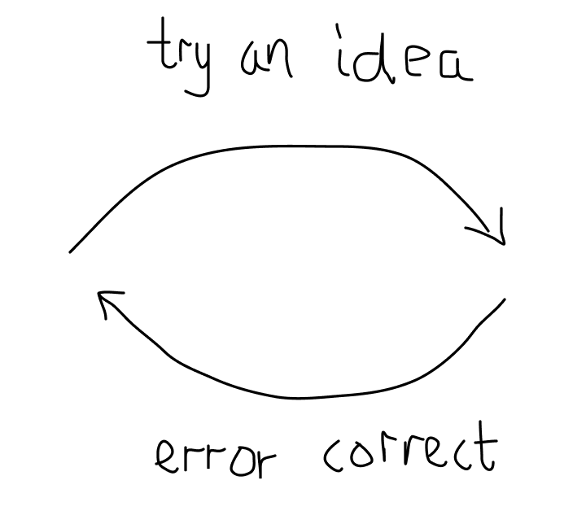

September 2020
How likely is it that a solution to a problem is optimal? It's stupefyingly improbable [1]. We're therefore
in the business of continually trying out new ideas and error correcting when solving a problem.
Trial and error is surprisngly central to many good ideas, and a lot of good
advice boils down to one thing: tightening the feedback loop.

When building software, it's best to build the simplest end-to-end system first, even if it's embarrassing to
release. This leads to you
asking the right questions earlier, like "do we really want to solve X, or do we actually want to solve Y?" and
"how do we even measure our progress on problem Y?". The shorter the trial and error cycle, the better.
You may even know this to be true from experience. How much easier is it to write software with a REPL than
without?
In science, candidate theories a chosen, experiments are performed and theories are error-corrected. In
democracy, the best candidate is voted into power, their policy executed, and we error-correct by not voting in
cadidates that repeat previous mistakes. In start ups,
- Science - hypothesis, experiment, correct theory
- Democracy - David Deutsch - pick best candidate, error correct. Peaceful transition of power is key to the
loop continuing to execute.
- Start ups - Paul Graham - talk to users (signal you should pay attention to), be determined (keep
executing)
- Engineering - Google X - fail fast - “The question is,” said Dr. Teller, “how fast can you
discover that the thing you’re working on is the wrong thing to be working on.”
- Growth Mindset - Carol Dweck - everyones first iterations of the loop look bad - experts are those that
just kept executing the loop
- Elon Musk - Tesla - optimise for tighter feedback-loop between assembly line and engineers
- Job applications - applying and failing, then gaining relevant experience, as opposed to preparing for
ages in isolation and realising that you should have been doing something completely different
- Programming - easier to program with a REPL
- Project management - build the simplest end-to-end system first. This leads to you asking the right
questions earlier, like "do we really want to solve X, or do we actually want to solve Y?" and "how do we
even measure our progress on problem Y?"
- Numerical analysis - absence of an analytic solution - try a solution, measure error, try a better
solution next time. Iterative schemes for solving PDEs e.g. Gauss-Seidel, Lax Wendroff
“The question is,” said Dr. Teller, “how fast can you
discover that the thing you’re working on is the wrong thing to be working on.”
- Speed is time/step.
- Intelligence is work done/step i.e. how good error correction is.
- Determination is keep executing the loop. It's more important to keep executing the loop than to increase
work done per step.
- Not getting discouraged while iterating the loop
- Whenever you can find a feedback loop you can be successful
PG's "talk to users" is telling you which signal to pay attention to. PG's "release early" is shortening the
feedback loop. PG's "determination is more important than intelligence" is saying it's more important to execute
the loop many times than to reduce the work done per step.
A lot of good advice boils down to having a tighter trial and error loop (e.g. Google X "fail fast",
PG's "release early"), or to keep executing it (e.g. Carol Dweck's Growth Mindset, PG's "determination matters
more than intelligence").
Have a tight trial and error loop, and don't give up.
Notes
[1] Not true in constrained enviornments, such as in mathematics, that allows for analytic solutions. This is
quite rare, though. For example, there's an analytic solution for the parameters in linear regression (the
normal equations), but as soon as you deviate slightly and change the activation function to the logistic
function, there's no longer an anlytic solution. Instead numerical methods are used, like gradient descent,
which uses trial and error to find successively better parameters.
|